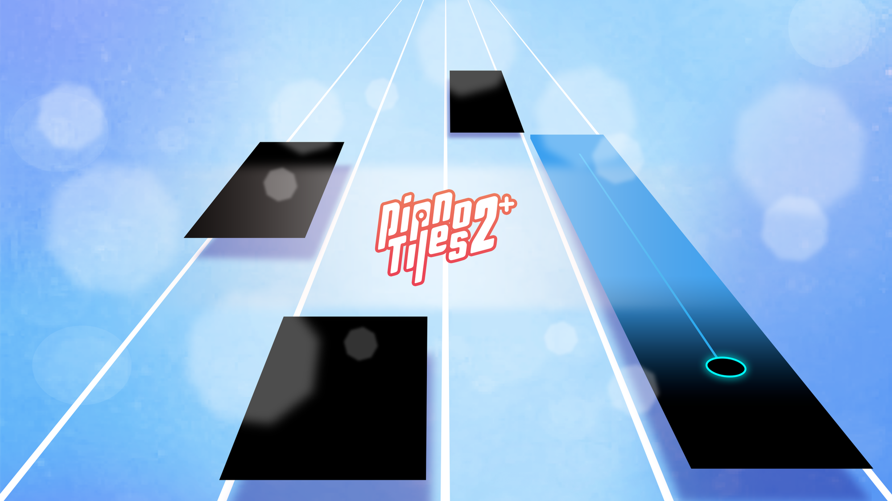

Apple Arcade tiếp tục ra mắt 2 tựa game trong tháng 3, là "thanh xuân" của hàng triệu game thủ
Apple Arcade chưa bao giờ khiến người chơi “thất vọng” với các tựa game đình đám của mình.
Apple Arcade mang tới “món quà” mới trong tháng 3/2025
Kể từ khi ra mắt, dịch vụ chơi game Apple Arcade của Apple luôn là lựa chọn hàng đầu của cộng đồng game thủ, khi sở hữu và phát hành liên tục các tựa game hết sức hấp dẫn. Mới đây, Apple Arcade tiếp tục mang tới tin mừng, khi xác nhận sẽ bổ sung thêm 2 tựa game cổ điển cực “bánh cuốn” để các game thủ thỏa sức trải nghiệm.
Đó chính là Piano Tiles 2+ và Crazy Eights: Card Games+. Đây là những phiên bản cải tiến của các phần game cũ, mang đến trải nghiệm thú vị hơn cho người dùng trên nền tảng Apple Arcade. Cụ thể như sau:
Piano Tiles 2+ của Kooapps là phiên bản nâng cấp của tựa game piano đình đám, nơi người chơi có thể chạm theo nhịp điệu của các bản nhạc yêu thích. Với hơn 1 tỷ fan trên toàn thế giới, trò chơi này mang đến thư viện nhạc đa dạng, từ cổ điển, dance đến ragtime…
Lối chơi vẫn giữ nguyên tính thử thách quen thuộc: tránh các ô trắng và chạm đúng vào ô đen theo nhịp. Phiên bản mới trên Apple Arcade giúp trải nghiệm mượt mà hơn, không có quảng cáo, mang đến những giai điệu âm nhạc đầy lôi cuốn.

Trong khi đó, Crazy Eights: Card Games+ của MobilityWare là phiên bản làm mới của trò chơi bài cổ điển, kết hợp giữa tư duy chiến lược và yếu tố may mắn. Người chơi cần ghép bài theo số hoặc màu sắc để nhanh chóng loại bỏ hết bài trên tay.

Điểm đặc biệt của phiên bản này là bổ sung những quy tắc độc đáo như xếp chồng thẻ +2, sử dụng thẻ Wild 8, Skip Queen, Reverse Ace… khiến mỗi ván đấu trở thành một cuộc so tài trí tuệ đầy hấp dẫn. Ngoài ra, trò chơi còn có bảng xếp hạng cạnh tranh và nhiều chế độ chơi phong phú, mang lại trải nghiệm đa dạng hơn.

Chưa hết, Apple Arcade còn bổ sung rất nhiều cập nhật đáng chú ý
Bên cạnh các trò chơi mới, Apple Arcade cũng liên tục cập nhật nội dung mới hàng tuần cho các tựa game yêu thích của người chơi. Những cập nhật nổi bật trong tháng 3 sắp tới bao gồm:

Thế nhưng, Starlight Legacy vẫn đang nhận được sự ủng hộ mạnh mẽ từ phía cộng đồng game thủ. Có lẽ, do sở hữu lối chơi nhập vai “bánh cuốn”, đồ họa 16-bit thân thiện và cốt truyện kinh điển, nên tựa game đã dễ dàng chiếm trọn cảm tình ngay từ cái nhìn đầu tiên.
- Bloons TD 6+: Ra mắt chế độ Rogue Legends, một cuộc phiêu lưu rogue-lite với chiến dịch chơi đơn được tạo ngẫu nhiên, giúp người chơi có thể trải nghiệm nhiều lần mà không bị nhàm chán.
- Tomb of the Mask+: Giới thiệu gói nhiệm vụ Samurai color quest với những thử thách mới.
- A Slight Chance of Sawblades+: Bổ sung nhân vật Deeno the dino, lưỡi cưa Meteorite và phông nền Dinoland mới.
- Castle Crumble: Cập nhật Mystic Marsh Kingdom với 40 màn chơi hoàn toàn mới, thử thách Moss King và chế độ Mystic March Conquest.
Có thể thấy, Apple Arcade đang tiếp tục khẳng định vị thế là một nền tảng trò chơi thân thiện với gia đình, cung cấp bộ sưu tập game chất lượng cao, không có quảng cáo và giao dịch mua trong ứng dụng. Với những cập nhật liên tục và các trò chơi hấp dẫn, Apple Arcade vẫn là lựa chọn tuyệt vời cho những ai yêu thích game di động chất lượng cao.
Apple Arcade là "thư viện game" không thể thiếu đối với những người chơi yêu thích trải nghiệm các trò chơi trên nền tảng di động, đặc biệt là thiết bị iPhone. Với số lượng game phong phú cùng mức chi phí hợp lý, Apple Arcade được xem là "món hời" đối với cộng đồng game thủ. Đặc biệt khi Apple Arcade có nhiều trò chơi độc quyền. Thú vị hơn nữa, vào những sự kiện trong năm, Apple Arcade lại có những trò chơi mang tính "chủ đề" dành tặng cho game thủ của mình.
Apple Arcade có mức giá 179.000đ mỗi tháng với ưu đãi dùng thử miễn phí một tháng. Khách hàng mua iPhone, iPad, Mac hoặc Apple TV mới sẽ nhận được ba tháng sử dụng miễn phí Apple Arcade.
Apple Arcade nằm trong các gói hàng tháng của Apple One như Gói Cá Nhân (239.000đ) và Gói Gia Đình (279.000đ), với ưu đãi một tháng dùng thử miễn phí.
Arcade Originals chơi được trên iPhone, iPad, Mac và Apple TV. Game Hay Trên App Store có trên iPhone và iPad.
Gói đăng ký Apple Arcade dành cho một gia đình tối đa sáu người với quyền truy cập không giới hạn vào tất cả các trò chơi trong danh mục.
Có hơn 200 game trên các thiết bị tùy thuộc vào mức độ tương thích của phần cứng và phần mềm. Một số nội dung không khả dụng tại một số khu vực.